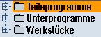
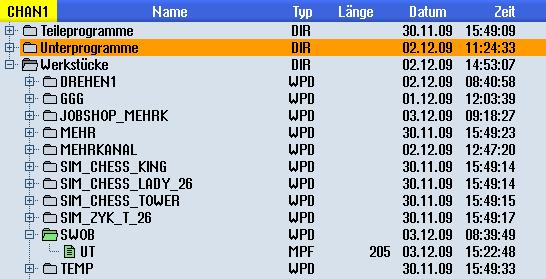

Über den Programm-Manager können Sie jederzeit auf Programme zugreifen, um sie abarbeiten zu lassen, um sie zu verändern oder um sie zu kopieren oder umzubenennen.
Programme, die Sie nicht mehr benötigen, können Sie löschen, um deren Speicherplatz wieder freizugeben.
| Achtung |
Abarbeiten von USB-FlashDriveEin direktes Abarbeiten oder Simulation von einem USB-FlashDrive wird nicht empfohlen. Es gibt keine Absicherung gegen Kontaktschwierigkeiten, Herausfallen, Abbrechen durch Anstoßen oder versehentliches Abziehen des USB-FlashDrive während des laufenden Betriebs. Das Trennen während der Werkzeugbearbeitung führt zum Stopp der Bearbeitung und somit auch zum Werkstückschaden. |
Ablageort für Programme
Mögliche Ablageorte sind:
-
NC
-
Lokales Laufwerk
-
Netzlaufwerke
-
USB-Laufwerke
-
FTP-Laufwerke
-
V24
| | Software-Optionen Für die Anzeige des Softkeys "Lokal. Laufw." benötigen Sie die Option "zusätzl. HMI-An.speicher auf Speicherkarte NCU". |
Datenaustausch mit anderen Arbeitsplätzen
Für den Austausch von Programmen und Daten mit anderen Arbeitsplätzen haben Sie folgende Möglichkeiten:
USB Laufwerke (z. B. USB-FlashDrive)
Netzlaufwerke
FTP Laufwerk
Wahl der Ablageorte
In der horizontalen Softkey-Leiste können Sie den Ablageort anwählen, dessen Verzeichnisse und Programme Sie anzeigen möchten. Zusätzlich zum Softkey "NC", über den die Daten des Dateisystems angezeigt werden, können noch weitere Softkeys angezeigt werden.
Der Softkey "USB" ist nur bedienbar, wenn ein externes Speichermedium (z. B. USB-FlashDrive am USB-Port der Bedientafel) angeschlossen ist.
Dokumente anzeigen
Sie haben die Möglichkeit, sich Dokumente auf Laufwerken des Programm-Managers (z. B. im Lokalen Laufwerk oder USB) und über den Datenbaum der Systemdaten anzeigen zu lassen. Dabei werden verschiedene Dateiformate unterstützt:
PDF
HTML
Eine Vorschau für HTML-Dokumente ist nicht möglich.
verschiedene Grafikformate (z. B. BMP oder JPEG)
DXF
| | Software-Optionen Für die Anzeige von DXF-Dateien benötigen Sie die Option "DXF-Reader". |
| Hinweis |
FTP LaufwerkDie Vorschau der Dokumente ist auf dem FTP-Laufwerk nicht möglich. |
Aufbau der Verzeichnisse
In der Übersicht haben die Symbole in der linken Spalte folgende Bedeutung:
| | Verzeichnis |
Programm |
Beim ersten Aufruf des Programm-Managers besitzen alle Verzeichnisse ein Plus-Zeichen.
Programmverzeichnis in Programm-Manager
Erst mit dem ersten Lesen werden die Plus-Zeichen vor leeren Verzeichnissen entfernt.
Die Verzeichnisse und Programme sind immer zusammen mit folgenden Informationen aufgelistet:
Name
Der Name darf maximal 24 Zeichen betragen.
Zulässige Zeichen sind alle Großbuchstaben (ohne Umlaute), Ziffern und Unterstriche
Typ
Verzeichnis: WPD
Programm: MPF
Unterprogramm: SPF
Initialisierungsprogramme: INI
Joblisten:JOB
Werkzeugdaten: TOA
Magazinbelegung: TMA
Nullpunkte: UFR
R-Parameter: RPA
Globale Anwenderdaten/-Definitionen: GUD
Settingdaten: SEA
Schutzbereiche: PRO
Durchhang: CEC
Größe (in Byte)
Datum/Zeit (der Erstellung oder letzten Änderung)
Aktive Programme
Angewählte, d. h. aktive Programme werden mit einem grünen Symbol kenntlich gemacht.
